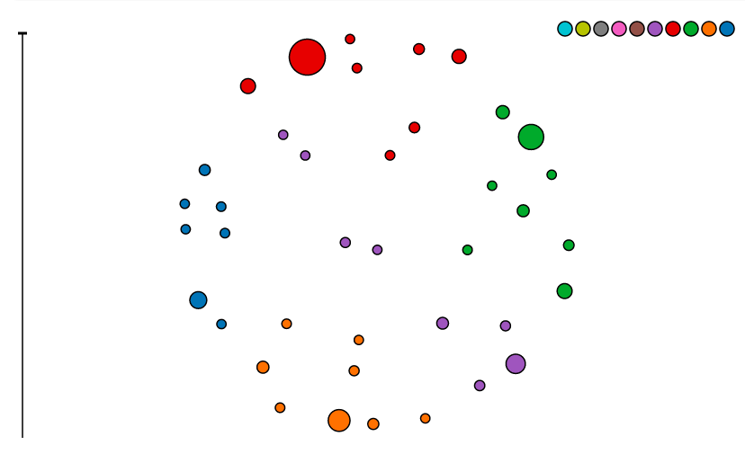

RMiner will output a file with the .txt extension. This file contains the patterns in your dataset. If you open the file, you will see multiple lines of entities.
Each line represents a pattern. It begins with a number that tells us how interesting that pattern is. Then there is a list of entities contained in that pattern. Each entity will consist of a type, a "." and the individual name of that entity. The image below is an example of what your file could look like:
An example of an entity in the above example would be "letter_idx.9" (top left corner of image). "letter_idx" is the entity type, while "9" is the name of that individual entity.
Click on the file upload button and select this file. Then click confirm.
This tool groups similar patterns together into clusters. These clusters are represented by circles. These clusters are then compared with one another. Similar clusters are put into groups. The images below are an example of what the visualisation looks like:
The user can decide how many clusters they would like in each group. Each group will still contain the same patterns regardless of how many clusters have been specified. Clusters are still formed by the most similar patterns.
This box displays summary information about what you are currently seeing in the visualisation below it. Below is a list of what each line in this box tells you about:
This is the visualisation of the pattern set you entered at the start. This help box has been divided into three sections regarding which part of the visualisation you need help with.
Each button represents the group of clusters it shares a colour with. Hovering over a button will highlight all the clusters that it represents. Clicking a button will slice away all clusters not in that group. Each cluster in the group will be split down into its own group (and will be given a new colour to represent this). There will therefore be as many colour groups as there were clusters in the group selected.
This slider gives a quick view of how many patterns are currently displayed relative to how many patterns there are in the file that has been visualised.
This tool groups patterns together into clusters of similar patterns. Each circle represents a cluster of similar patterns. Each cluster in turn has been grouped with other clusters that contain similar patterns. Further to this, each cluster is pulled towards clusters it is similar to and pushed away from clusters it is disimilar to. Clusters close together then contain patterns that are similar to the patterns in the other cluster. Clusters far away from one another contain patterns that are disimilar from the patterns in the other cluster.
Hovering over a cluster causes a tooltip to appear in the top left of the visualisation. This tooltip provides summary information about that cluster including how many patterns it contains and what percentage of patterns it represents compared to how many patterns are currently been displayed.
Clicking a cluster causes a tooltip to appear that provides a detailed look at the entities the patterns in that cluster contains. Each entity has been given a score that tells you how interesting that entity is. If that entity is present in many of the clusters, it is given a low score. If it does not turn up very much at all, it is also given a low score. If turns up regularly in the patterns in the clicked cluster but not very often in other clusters, it is given a high score. Scores range between the numbers 0 and 1.
This table provides details of how frequent an entity is in the patterns currently displayed in the above visualisation. The entities are ordered by how many of that entity there is the currently displayed patterns. The initial table only displays the top ten most frequent entities.
To look for an entity not in the top ten, enter its name in the search bar and click search. The table will change its contents to reflect the search. A "Top Ten" button will appear when you click search which will return the tables contents to the top ten entities.
Clicking on a row in the table will change the visual to indicate which clusters the clicked entity turns up in. The clusters outline will change to a shade of red. The lighter the shade of red, the more of the clicked entity that cluster contains. Clusters with black outlines contain none of the clicked entity. While in this state, the hover tooltip changes its contents to show how many patterns in that cluster contain the clicked entity.